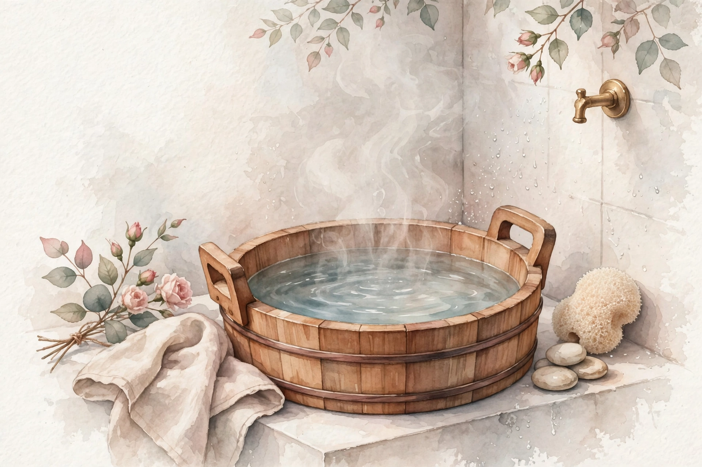

洗髪のお湯の温度の目安

洗髪のお湯の温度を、意識したことはありますか。施術の現場では、お客様の好みに合わせて温度を細かく調整します。「熱いのが好き」という方もいれば、「ぬるめがいい」という方もいます。この記事では、温度の目安の考え方を整理します。
目安は「体温より少し高い」くらい
一般的な目安として語られるのは、38度前後、体温より少し高い程度の温度です。手で触って「温かい」と感じるくらいが、その目安に当たります。熱いお湯は、頭皮の皮脂を落とす方向に強く働くと言われ、乾燥感につながる場合があります。逆にぬるすぎると、整髪料などがゆるみにくく、すすぎに時間がかかることがあります。
数字はあくまで出発点です。最終的には、洗った後の頭皮の感触と、自分の心地よさで調整してください。温度計がなくても、給湯器の設定温度を目安に、手首の内側で確かめる方法があります。
季節と場面で調整する
冬はお湯の温度を上げたくなりますが、頭皮への温度と身体への温度を分けて考えることもできます。洗髪は目安の温度で、身体は好みの温度で、という分け方です。給湯器の設定を洗髪のたびに変えるのは手間なので、湯量の出し方で調整する方もいます。
予洗いの温度も、洗髪全体と同じ温度が基本です。温度がばらつくと、泡の感じ方も変わります。予洗いの進め方は、別記事「予洗いの時間とお湯の使い方」でも紹介しています。温度をそろえることは、手順をそろえることの一部です。
熱いお湯が好きな方へ
熱めのお湯が好きな方は、温度を一気に下げる必要はありません。まず給湯器の設定を1度ずつ下げて、洗い上がりの感触の違いを確かめてみてください。数日単位で様子を見ると、自分のちょうどいい温度が見えてきます。
温度は、洗髪の心地よさを決める大切な要素です。量や時間と同じように、温度にも「自分の目安」を持っておくと、毎日の洗髪が安定します。頭皮に異常を感じる場合は温度の問題として扱わず、専門家に相談してください。
施設や旅行先では、給湯の仕組みが自宅と違い、温度の出方が安定しないことがあります。その場合は、シャワーをしばらく出して温度が安定してから使い始めるのが基本です。旅先の洗髪については、アメニティや小分けの別記事もあわせて参考にしてください。環境が変わっても、温度を確かめる手順は同じです。
子どもの洗髪では、大人よりも低めの温度が一般的に勧められます。家族で同じ浴室を使う場合は、使う人ごとに温度の目安が違うことを意識してください。給湯器の設定を家族の誰に合わせるかは、家庭ごとに話し合って決めることです。温度の目安は、使う人ごとに持つものだと私は考えています。
温度の感じ方は、体調でも変わります。疲れている日は熱いお湯が心地よく感じられ、のぼせやすい日はぬるめが合うこともあります。目安の温度は出発点で、その日の体調に合わせて微調整して構いません。大切なのは、無意識にいつも最大まで熱くしてしまう癖に気づくことです。また、洗髪の最後に少し温度を下げてすすぐ方もいます。温度の使い分けは好みの領域ですが、こうした工夫があることを知っておくと、自分の洗髪の引き出しが増えます。試すときは、1度の調整から少しずつ進めてください。
温度の目安が決まると、家族にも伝えやすくなります。『うちのお湯はこの温度』という基準があると、給湯器の設定をめぐる行き違いも減ります。基準は、共有するためにも役立ちます。
温度を確かめる習慣は、入浴全体の心地よさにもつながります。洗髪のお湯がちょうどよいと、その後の入浴も落ち着いて楽しめます。温度は、入浴という時間全体の質を決める要素のひとつです。
セラフィナ「お湯は体温より少し高いくらいが目安。1度ずつ試して、自分の温度を見つけよう」